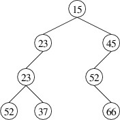

Heaps
Heaps
A common structure for implementing a priority queue is known as a heap. A heap is a tree whose nodes contain elements with priorities that can be ordered. Furthermore, if the heap is nonempty, its root contains the maximum priority of any node in the heap, and each of its children is also a heap. Note that this implies that, in any subtree, the maximum priority is at the root. We define a min-heap similarly, except that the minimum priority is at the root. Below is an example of a min-heap with integer priorities (the data elements are not shown — only their priorities):

Note that this structure is different from a binary search tree, as there are elements in the left child that have larger priorities than the root. Although some ordering is imposed on the nodes (i.e., priorities do not decrease as we go down a path from the root), the ordering is less rigid than for a binary search tree. As a result, there is less overhead involved in maintaining this ordering; hence, a min-heap tends to give better performance than an AVL tree, which could also be used to implement a min-priority queue. Although the definition of a heap does not require it, the implementations we will consider will be binary trees, as opposed to trees with an arbitrary number of children.
The heap data structure is unrelated to the pool of memory from which instances of reference types are constructed — this also, unfortunately, is called a heap.
One advantage to using a min-heap to implement a min-priority queue is fairly obvious — an element with minimum priority is always at the root if the min-heap is nonempty. This makes it easy to find the minimum priority and an element with this priority. Let’s consider how we might remove an element with minimum priority. Assuming the min-heap is nonempty, we need to remove the element at the root. Doing so leaves us with two min-heaps (either of which might be empty). To complete the removal, we need a way to merge two min-heaps into one. Note that if we can do this, we also have a way of adding a new element: we form a 1-node min-heap from the new element and its priority, then merge this min-heap with the original one.
Let us therefore consider the problem of merging two min-heaps into one. If either min-heap is empty, we can simply use the other one. Suppose that both are nonempty. Then the minimum priority of each is located at its root. The minimum priority overall must therefore be the smaller of these two priorities. Let s denote the heap whose root has the smaller priority and b denote the heap whose root has the larger priority. Then the root of s should be the root of the resulting min-heap.
Now that we have determined the root of the result, let’s consider what we have left. s has two children, both of which are min-heaps, and b is also a min-heap. We therefore have three min-heaps, but only two places to put them - the new left and right children of s. To reduce the number of min-heaps to two, we can merge two of them into one. This is simply a recursive call.
We have therefore outlined a general strategy for merging two min-heaps. There two important details that we have omitted, though:
- Which two min-heaps do we merge in the recursive call?
- Which of the two resulting min-heaps do we make the new left child of the new root?
There are various ways these questions can be answered. Some ways lead to efficient implementations, whereas others do not. For example, if we always merge the right child of s with b and make the result the new right child of the new root, it turns out that all of our min-heaps will have empty left children. As a result, in the worst case, the time needed to merge two min-heaps is proportional to the total number of elements in the two min-heaps. This is poor performance. In the next section we will consider a specific implementation that results in a worst-case running time proportional to the logarithm of the total number of nodes.